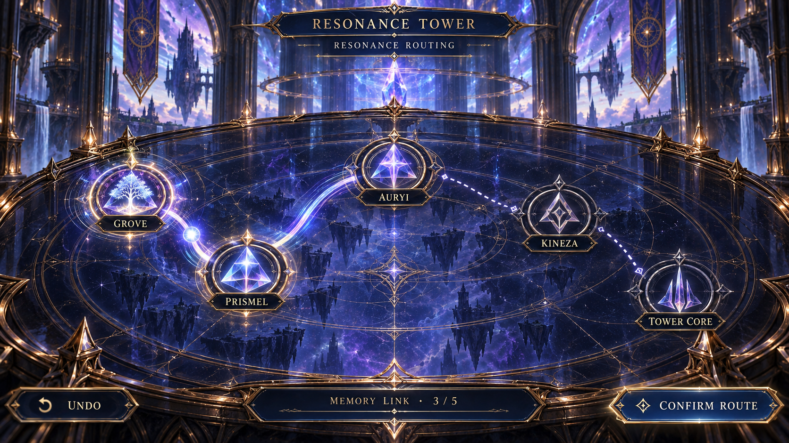

The next two locks
Two visual proposals and seven sound concepts for review. Puzzle 1 is the accepted interaction baseline. These concepts are separate from the playable Tower.
DESIGN REVIEW · SEPTEMBER 2602 · Harmonic Calibration

Tune the low, mid and high harmonics until their waveforms fit the marked target windows. Each instrument follows your drag and has precise arrow controls. The signal becomes audibly steadier as it aligns; outlines and a stability meter provide the same information with sound off.
Interaction and build plan
- Retain the current targets 62 / 38 / 76 and ±4 tolerance for the first prototype.
- One instrument per row on short phone screens; three side by side where space permits. Never shrink the touch areas below 44 pixels.
- Hold all three within tolerance briefly, then explicitly choose Lock Calibration. No automatic page jump.
- Build separate instrument art, animated waveform, target window, controls and HUD layers. The approved mock will guide asset production.
- Controller: select an instrument with up/down; tune with left/right; A confirms a stable calibration.
03 · Resonance Routing

{kind=link}
Carry the recovered Grove memory through Prismel, Auryi and Kineza to the Tower core. Light pulses travel along each established connection. Every successful link contributes a short musical phrase.
Interaction and build plan
- Use the existing Grove → Prismel → Auryi → Kineza → core sequence as the first teaching route.
- Tap a source and its destination; dragging is an optional shortcut. Controller focus uses the same valid targets.
- Reveal the next clue through the memory's content, rather than asking players to guess an invisible order.
- An invalid link leaves completed connections intact. Undo removes the last connection. Confirm Route completes the puzzle.
- Nodes, path ribbons, traveling pulses and the viewing-table frame remain independent. No invented Bearer portraits or monster art.
Listen · Tower sound concepts
Original synthesized audition cues: soft mechanisms and prismatic harmonics. These are sound-effect proposals, not music masters. Start at a comfortable volume. Playback begins only when you press Play.
Ready to listen.
Beyond the Tower
Proposed story direction: stabilization reveals an incomplete Grove memory pointing toward Echo Castle. Frigid Hills holds a separate lead. The exact revelations, rewards and route requirements remain to be written and reviewed.
- Approve the two puzzle directions and sound palette.
- Build and test Puzzle 2, then Puzzle 3, on the normal Tower route.
- Add the Tower resolution scene, rewards, Grimoire discovery and next objective.
- Audit every reachable PV path for its objective, challenge, reward, unlock and next story beat.
- Build the next complete story segment with party dialogue and meaningful consequences.